Protein Pancake Recipe
Ingredients 1 Person each
5 g Butter
50 g Flour
0.5 tbsp Brown sugar
0.25 packet Vanilla sugar
0.5 tsp Baking powder
0.06 tsp Salt
0.75 dl Buttermilk or Milk
0.25 Fresh egg
Butter for frying
0.5 tbsp Maple syrup
Steps

5 g Butter
50 g Flour
0.5 tbsp Brown sugar
0.25 packet Vanilla sugar
0.5 tsp Baking powder
0.06 tsp Salt
0.75 dl Buttermilk or Milk
0.25 Fresh egg
Butter for frying
0.5 tbsp Maple syrup
